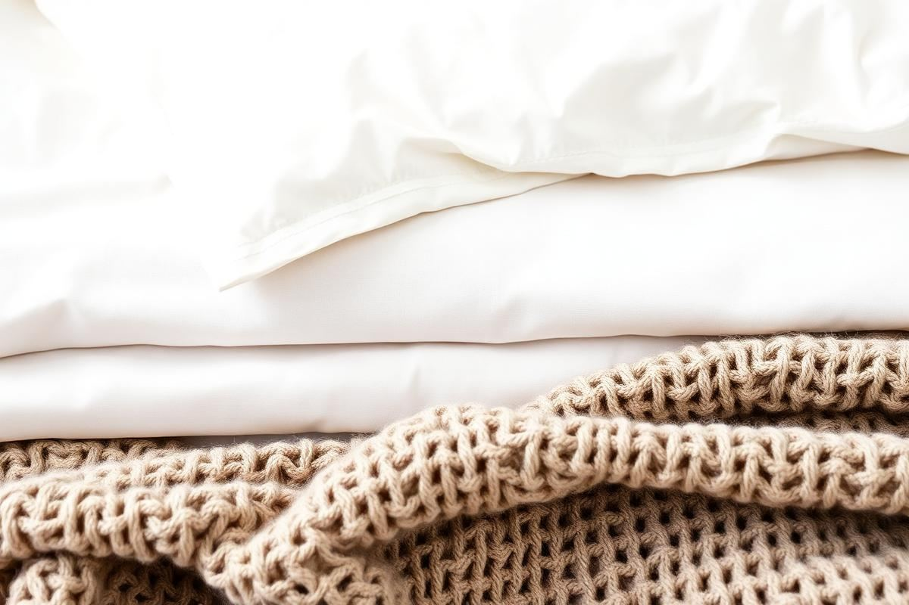

How to Layer a Bed Like a Hotel Stylist
People come back from a good hotel convinced the bed was better than theirs. Usually the mattress is unremarkable and the linen is a mid-range cotton percale. What is different is the layering: a fixed number of layers, each one a different weight, folded in a consistent order. It is a system, and once you know it you can reproduce it at home in about four minutes a day.
Why layering works
Layers do two jobs at once. Visually, they create depth — the eye reads five or six horizontal bands of different texture instead of one flat expanse of duvet, which is why a layered bed photographs so well. Practically, they let two people regulate temperature independently, because you can throw off a quilt without losing the sheet underneath. That is the reason hotels layer in the first place; the aesthetic is a by-product.
The order of layers, bottom to top
The sequence matters more than the individual pieces. Work from the mattress up and do not skip the protector — it is the layer that determines how long everything above it lasts.
- Mattress protector: quilted cotton, washed every two months.
- Fitted sheet: percale for cool sleepers, sateen or brushed cotton for warm.
- Flat sheet: folded back over the top layer by about 12 inches.
- Blanket or quilt: the mid-weight layer that gives the bed its body.
- Duvet: folded in thirds and laid across the bottom half, or pulled up fully in winter.
- Throw: at the foot, folded to roughly a third of the bed's width.
Six layers sounds excessive until you make the bed once. The whole point is that each one is thinner than a single heavy duvet, so the total weight is similar and the flexibility is far greater.
Pillow maths by bed size
There is a simple rule: two rows for a double, three for a king. The back row is sleeping pillows standing upright against the headboard, the middle row is a second pair in a decorative cover, and the front is one lumbar cushion. Anything beyond that has to be removed at night, which is why guest rooms with nine pillows are quietly irritating to stay in.
- Single: two sleeping pillows plus one small cushion.
- Double: four pillows in two rows plus one lumbar.
- King: six pillows in three rows plus one lumbar, or two Euro squares at the back.
- Euro squares (26 inch) at the back add height and make a low headboard look taller.

Choosing fabric weights that mix
The layers should differ in texture, not just colour. A useful combination is crisp at the bottom, soft in the middle, chunky on top: percale sheets, a waffle or cotton-cellular blanket, a linen duvet cover, and a wool or chunky knit throw. If everything is the same smooth cotton, the bed reads flat no matter how many layers you add.
On thread count: above roughly 400 the returns are minimal and very high numbers usually indicate multi-ply yarn rather than better cloth. A 200 to 300 thread count percale from a good mill will outlast and out-feel a 1000 thread count bargain set every time.
The fold that does most of the work
Fold the duvet in thirds and lay it across the lower half of the bed, with the folded edge facing the headboard. That single move creates the horizontal line that makes hotel beds look deliberate, and it gives you a layer you can pull up in the night without unmaking anything. The folded edge should sit roughly a third of the way up from the foot of the bed.
Then fold the flat sheet back over the blanket by about 12 inches and smooth it flat with your forearm rather than your hand — you get a straighter line and fewer creases.
Colour and pattern in a layered bed
Keep the two largest layers — sheets and duvet — plain, and put any pattern in the smaller pieces. White or oatmeal bases make everything else work and they can be washed hot. If you want colour, take it from something already in the room: the curtain, a rug, a piece of art. Bedding chosen in isolation is the most common reason a bedroom feels slightly off.
Limit yourself to three colours across the whole bed, counting white as one of them. Beyond three, the layers stop reading as depth and start reading as noise.
The five-minute weekday version
Nobody executes six layers before work. The weekday version: pull the fitted sheet taut, pull the flat sheet and blanket up together as one unit, fold the top back 12 inches, plump two sleeping pillows upright, and lay the throw across the foot. Four minutes, and it captures about 80 per cent of the effect. Save the full arrangement, including the decorative pillows, for the weekend or before guests arrive.
Seasonal adjustments
- Summer: drop the duvet entirely, keep the flat sheet and a cotton-cellular blanket, and switch to percale.
- Autumn: reintroduce the folded duvet at the foot and add a wool throw.
- Winter: pull the duvet fully up, add a second blanket beneath it, and switch to brushed cotton sheets.
- Spring: strip back to sheet, quilt, and linen throw — and wash everything hot once before storing the winter layers.
Rotate rather than accumulate. Two full sets of sheets and three top layers cover an entire year comfortably, and everything gets enough use to justify the cupboard space it occupies.
Key takeaways
- Layer in a fixed order from protector to throw.
- Mix textures — crisp, soft, chunky — rather than colours.
- Two pillow rows for a double, three for a king.
- Fold the duvet in thirds across the lower half of the bed.
- Keep a four-minute weekday version and save the full setup for weekends.
Frequently asked questions
How many layers should a bed have?
Six works well: protector, fitted sheet, flat sheet, blanket or quilt, duvet, and a throw. Each layer is lighter than a single heavy duvet, so the total weight stays similar.
How many pillows should be on a bed?
Two rows for a double — four pillows plus one lumbar. Three rows for a king. Anything more has to be removed at night.
Does thread count matter for bedding?
Only up to a point. Above about 400 the returns are minimal, and very high counts usually mean multi-ply yarn rather than better cloth.
How do I fold a duvet at the foot of the bed?
Fold it in thirds with the folded edge facing the headboard and lay it about a third of the way up from the foot.
What is the quickest way to make a layered bed look good?
Pull the sheet and blanket up together, fold back 12 inches, stand two pillows upright, and lay a throw at the foot. Four minutes total.

Sophia Bennett is a certified interior stylist and the senior editor at Styleire. She has spent more than eight years helping homeowners and renters create warm, functional interiors, with hands-on experience across small city apartments and family homes. Her work has been informed by close collaboration with independent designers, craftspeople, and product testers.
View full profile →Related reading

Cozy Bedroom Ideas: 12 Changes That Actually Make a Difference
Cozy is a feeling built from small, specific choices. Here are the twelve that make the biggest difference.

How to Choose Bedding That Actually Feels Good
Thread count is mostly noise. Here is what actually determines how bedding feels.

Guest Bedroom Essentials: What Actually Matters
Guest Bedroom Essentials: What Actually Matters — a clear, editor-tested guide covering the essentials without the filler.